Anthropic vient de lancer Claude Cowork Live Artifacts et cela change complètement ma façon de l'utiliser. Et je pense sincèrement qu'il n'y a pas assez de gens qui parlent de la puissance réelle de cet outil. Donc, dans cette vidéo, je vais vous l'expliquer en termes simples pour que tout le monde puisse comprendre et vous montrer comment vous pouvez commencer à l'utiliser dès maintenant. Alors, sans plus attendre, entrons tout de suite dans le vif du sujet.
Interface & Outils : Navigateur web / Application web interactive (Rhythm Machine).
Contenu textuel & Code : Interface utilisateur d'une boîte à rythmes interactive avec pistes audio (Kick, Snare, Hihat, Openhat, Clap), boutons de contrôle (Play, Stop, Tempo) et tags de genres musicaux.
Action / Démonstration : Démonstration visuelle d'une application interactive générée ou alimentée par une intelligence artificielle.
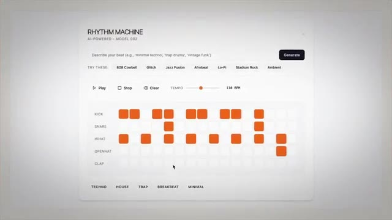
🔍 AgrandirLaissez-moi souligner rapidement ce problème que résout le nouveau Cowork Live Artifacts, et ensuite je vais l'analyser en profondeur. Et ce problème, c'est que les artefacts statiques deviennent obsolètes très rapidement. Pour vous montrer exactement ce que je veux dire, voici ma compétence de briefing matinal qui s'exécute comme une tâche planifiée tous les matins à 8 heures.
Interface & Outils : Navigateur web et application Cowork / interface de productivité.
Contenu textuel & Code : Titre de présentation, puces textuelles, sources d'actualités sur l'IA (GPT-6, Claude Mythos, Gemma 4, Muse Spark), calendrier et e-mails.
Action / Démonstration : Le présentateur introduit le problème des artefacts statiques et montre un exemple concret de briefing matinal.
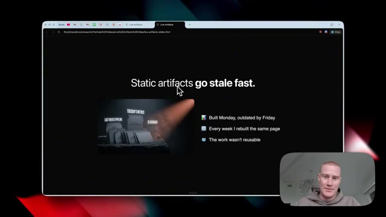
🔍 Agrandir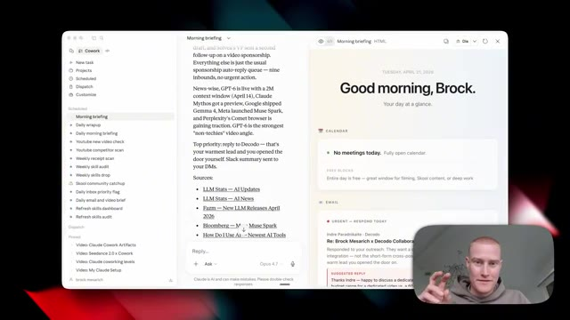
🔍 AgrandirIl extrait automatiquement les données de mon Google Agenda et de mon adresse e-mail, puis décompose fondamentalement tous les e-mails qui nécessitent une réponse ainsi que des suggestions de réponses, et ventile même les trois principales priorités de la journée, et cela a changé la donne pour moi personnellement. Mais le gros problème avec cela, c'est qu'il s'agit d'un tableau de bord HTML statique.
Interface & Outils : Application de productivité Cowork avec vue sur les e-mails et les briefings.
Contenu textuel & Code : Résumé des e-mails, priorités de la journée, suggestions de réponses automatiques pour chaque e-mail, sources d'actualités sur l'IA et barre de commande textuelle en bas.
Action / Démonstration : Présentation de l'interface et lecture des e-mails analysés par l'intelligence artificielle.
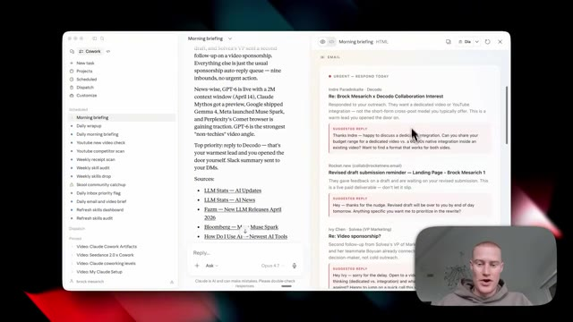
🔍 AgrandirLaissez-moi donc vous expliquer dès maintenant ce que cela signifie en français simple. Cela signifie essentiellement que chaque fois que je veux que cela se mette à jour avec des informations en direct, je dois venir voir Claude et lui dire, hé, rafraîchis ces informations. Et il doit passer par là, extraire les données de mon Google Agenda. Il doit à nouveau extraire les données de mes e-mails et générer automatiquement ce tableau de bord à partir de zéro, ce qui gaspille tellement de mes jetons Claude.
Interface & Outils : Application de productivité Cowork (interface web/bureau avec panneau latéral, sources d'actualités et zone de chat IA).
Contenu textuel & Code : Texte d'un briefing matinal sur l'intelligence artificielle (GPT-6, Claude, actualités technologiques), calendrier vide et aperçu des e-mails.
Action / Démonstration : Présentation de l'interface de l'application et démonstration de la zone de discussion pour rafraîchir les informations.
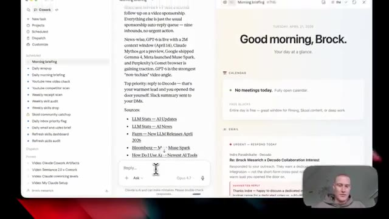
🔍 Agrandir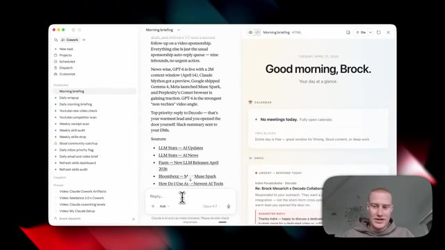
🔍 AgrandirEt vous avez probablement rencontré exactement le même problème. Eh bien, ce n'est plus un problème avec les nouveaux artefacts en direct. Ceci, juste ici, est un artefact en direct que j'ai créé en environ deux minutes et qui me donne automatiquement un résumé matinal. Il analyse donc tous les e-mails auxquels je dois répondre. Il me montre tout ce qui se trouve sur mon agenda Google pour la semaine, détaille mes principales priorités, et détaille même différentes conversations en cours que j'ai et qui nécessitent une réponse.
Interface & Outils : Interface web "Claude Cowork" / Tableau de bord de gestion des e-mails.
Contenu textuel & Code : Statistiques des e-mails (19 nouveaux e-mails, 7 priorités, 4 réunions), widgets de résumé matinal, calendrier hebdomadaire et liste des e-mails prioritaires. [ACCESS] Navigation et présentation du tableau de bord de résumé des e-mails par l'orateur.
Action / Démonstration : Explications face caméra et analyse conceptuelle des marchés.
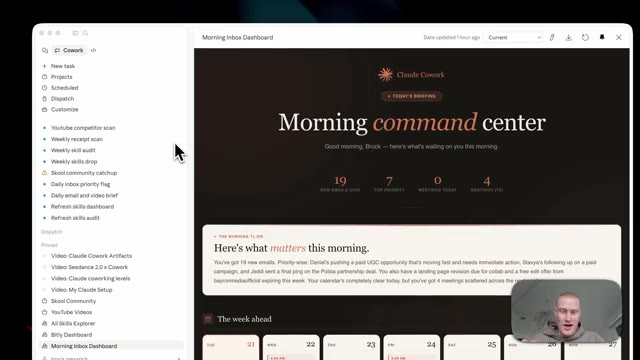
🔍 Agrandir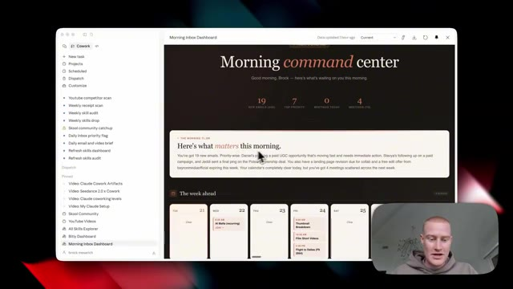
🔍 Agrandir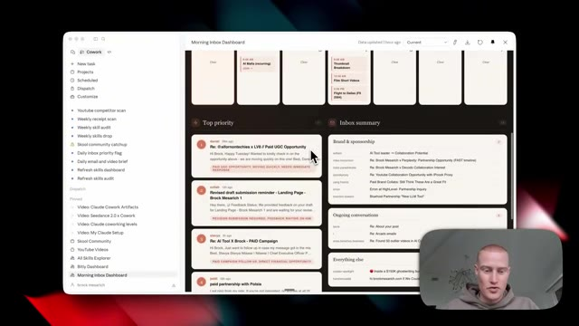
🔍 AgrandirLa chose clé à noter ici, c'est que lorsque je reçois un nouvel e-mail, cet artéfact en direct va automatiquement intégrer cet e-mail sans que j'aie besoin d'aller cliquer sur actualiser ou de demander à Claude d'analyser toute ma boîte de réception et de régénérer ceci. C'est pourquoi c'est une telle révolution, car nous pouvons désormais commencer à utiliser ces mini applications web au sein de Claude Cowork qui utilisent nos données provenant des différentes applications que nous utilisons, sans que nous ayons besoin d'aller créer quelque chose dans Lovable ou Replit, par exemple.
Interface & Outils : Application de type tableau de bord / Claude Cowork avec panneau latéral et affichage central interactif.
Contenu textuel & Code : Titre « Morning command center », statistiques (« 19 NEW EMAILS », « 7 TOP PRIORITY », « 0 MEETINGS TODAY », « 4 MEETINGS (7D) »), et aperçu de la semaine à venir.
Action / Démonstration : Présentation et explication du fonctionnement dynamique et en direct du tableau de bord d'e-mails.
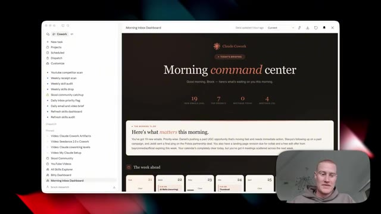
🔍 AgrandirVoici un exemple d'un autre artéfact en direct que j'ai créé qui suit automatiquement tous les liens qui suit automatiquement tous les liens dans mes descriptions pour mes vidéos YouTube, récupère à partir d'une plateforme appelée Bitly que j'ai connectée à Claude. Et je peux voir en temps réel quels liens de vidéos obtiennent des clics et combien de clics il obtient à la minute.
Interface & Outils : Application Claude Cowork, interface de tableau de bord Bitly intégrée.
Contenu textuel & Code : Statistiques de clics en temps réel, graphiques d'évolution temporelle, métriques par pays, par source (YouTube) et par système d'exploitation (macOS), ainsi qu'un classement des liens les plus performants.
Action / Démonstration : Présentation et navigation dans le tableau de bord interactif des liens Bitly connectés à Claude.
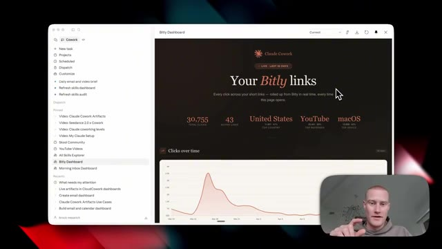
🔍 Agrandir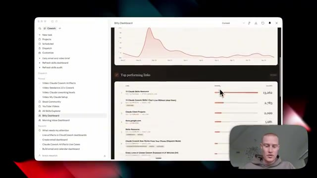
🔍 AgrandirDonc, par exemple, je pourrais voir quel pays clique sur ces vidéos. Je pourrais voir d'où cela vient, que ce soit YouTube, Instagram, et cetera. Je pourrais voir les différents appareils que les gens utilisent pour cliquer sur ces ressources. Et tout cela provient d'un logiciel appelé Bitly que je connecte simplement à Claude. Et encore une fois, pour que cela se mette à jour avec de nouvelles informations, je n'ai pas besoin d'aller sur Claude et de lui dire de régénérer cela comme je devais le faire avant.
Interface & Outils : Interface web de tableau de bord analytique (Claude Cowork / Bitly Dashboard)
Contenu textuel & Code : Statistiques de clics, graphiques circulaires par pays, source de trafic et OS, graphiques d'évolution temporelle et métriques agrégées.
Action / Démonstration : Présentation et explication des différentes métriques de suivi des liens par le présentateur.
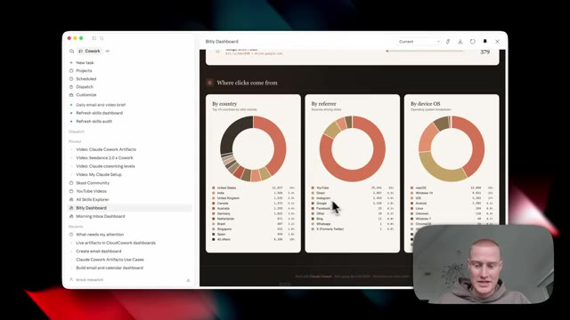
🔍 Agrandir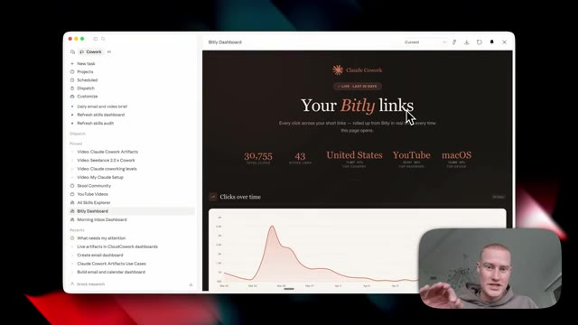
🔍 Agrandir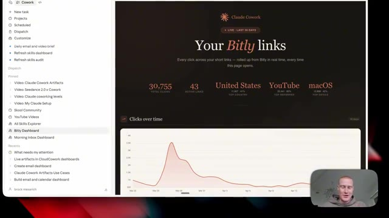
🔍 AgrandirJ'avais littéralement une tâche programmée où, chaque jour à 17 heures, le système allait chercher toutes ces informations sur Bitly, régénérait tout ce tableau de bord, et honnêtement, me faisait gaspiller des tonnes de crédits. Si vous êtes sur le forfait pro à 20 dollars par mois avec Claude ou même sur le forfait max, cela va vous faire économiser tellement d'argent si vous générez des tableaux de bord HTML comme je le fais personnellement tout le temps. Tout cela est possible grâce aux artefacts en direct avec la fonction de connecteurs à l'intérieur de Claude. Et si vous n'êtes pas familiarisé avec ça, c'est fondamentalement ainsi que vous connectez vos applications à Claude, afin que vous puissiez extraire des données de votre e-mail. Vous pourriez rédiger des réponses à des e-mails.
Interface & Outils : Application de bureau Claude Cowork et navigateur web affichant une interface de tableau de bord et une présentation.
Contenu textuel & Code : Statistiques de liens Bitly (total des clics, liens actifs, pays, source de trafic, appareil) et graphiques d'évolution temporelle.
Action / Démonstration : Présentation et explication du fonctionnement des tableaux de bord automatisés et des artefacts dynamiques.
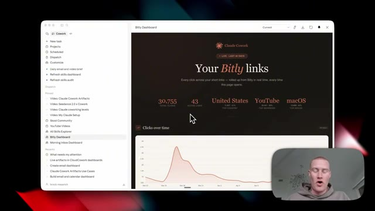
🔍 Agrandir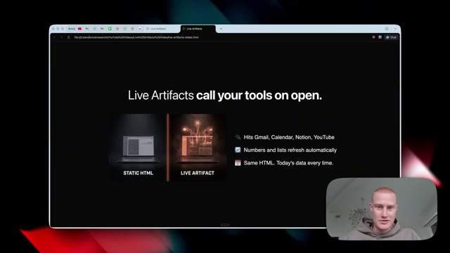
🔍 AgrandirVous pouvez extraire des données de votre agenda Google et fondamentalement faire différentes choses à travers ces applications en ayant accès à cela via ces connecteurs. Ceci ici même est un visuel parfait de ce dont je parle. Nous avons Gmail, Agenda, Notion, HubSpot, toutes ces différentes applications que nous utilisons connectées à Claude. Et cela génère en fait ces artefacts en direct, en temps réel, alors que nous ne sommes même pas sur notre ordinateur.
Interface & Outils : Navigateur web affichant une page de présentation de type slide avec une incrustation vidéo du présentateur en bas à droite.
Contenu textuel & Code : Titre 'Live Artifacts call your tools on open', comparaison entre 'STATIC HTML' et 'LIVE ARTIFACT', ainsi qu'une liste d'intégrations (Gmail, Calendar, Notion, YouTube).
Action / Démonstration : Le présentateur explique visuellement comment les artefacts en direct se connectent à différents outils et applications.
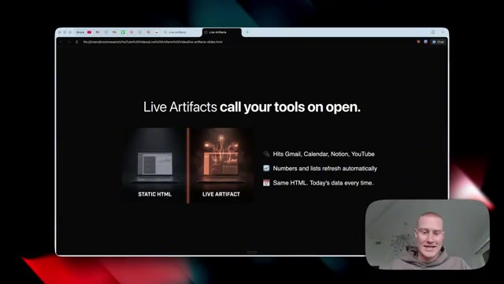
🔍 AgrandirLaissez-moi maintenant vous montrer exactement comment vous pouvez commencer à utiliser ceci dès maintenant et exactement comment cela fonctionne. Tout d'abord, assurez-vous d'avoir téléchargé l'application de bureau Claude. Vous ne pourrez pas y accéder à moins d'être dans l'application de bureau. Donc, si vous ne l'avez pas téléchargée, il y a un lien dans la description pour le faire. Une fois que nous aurons téléchargé l'application de bureau et que nous l'aurons ouverte, nous verrons cette interface ici même.
Interface & Outils : Navigateur web affichant le site claude.com et application de bureau Claude.
Contenu textuel & Code : Page de téléchargement de l'application Claude et interface de chat de bureau avec options de saisie.
Action / Démonstration : Présentation du site de téléchargement de Claude puis affichage de l'application de bureau installée.
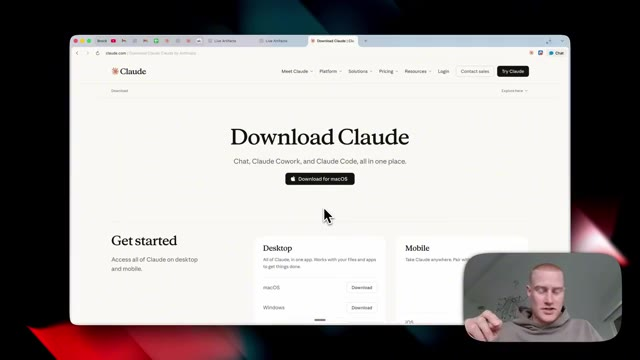
🔍 Agrandir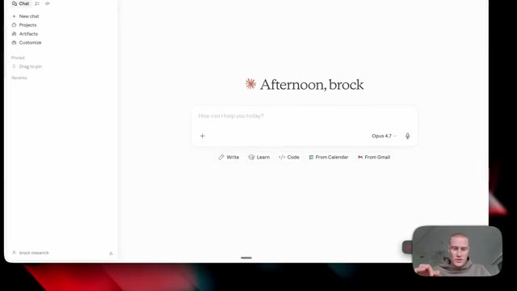
🔍 Agrandirils ont récemment redessiné ceci. Donc, afin d'accéder au mode co-travail, qui est l'endroit où nous devons être pour essayer ceci, nous devons venir ici et activer ce bouton de co-travail. Il a cette petite liste de tâches, cette sorte de liste de contrôle. Donc, cliquez dessus et nous allons voir cette interface. Nous devons nous assurer de sélectionner le dossier de travail de notre choix que nous voulons ajouter. Donc, si vous n'en avez pas déjà un, vous pouvez venir ici et créer un dossier différent. C'est fondamentalement là que vos projets et tous vos tableaux de bord HTML et vos fichiers vont être stockés sur votre ordinateur. Ensuite, si vous faites défiler vers le bas juste ici sur la barre latérale gauche, j'ai personnellement ces différents artefacts que
Interface & Outils : Interface de l'application Claude / Bureau virtuel.
Contenu textuel & Code : Menu de co-travail, liste de tâches programmées (Scheduled, Dispatch, Pinned) et sélection de dossiers de projets (Claude Code Short System, Obsidian, Receipts, etc.).
Action / Démonstration : Navigation dans l'interface de co-travail, clic sur le bouton Cowork et sélection d'un dossier de projet.
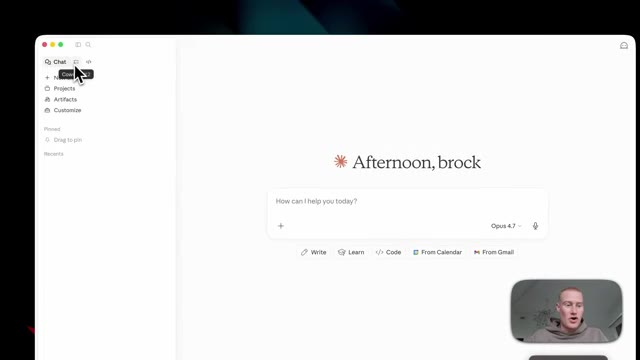
🔍 Agrandir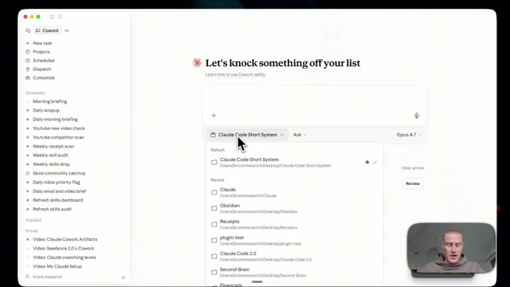
🔍 Agrandirsont stockés directement ici même. Et c'est l'une des meilleures choses à ce sujet parce qu'une fois que nous générons un artéfact en direct, nous pouvons toujours y accéder dans la barre latérale. Nous n'avons donc pas besoin de chercher dans toutes nos conversations pour comprendre où se trouve ce tableau de bord HTML spécifique. Cela va honnêtement être un gain de temps considérable. J'ai donc ceux-ci juste ici. Par exemple, j'ai celui-ci d'ouvert. Ce sont toutes mes différentes compétences Claude que j'utilise, un total de 237 ici dans co-work et littéralement à chaque fois que je génère une nouvelle compétence, cela va se remplir automatiquement sans que j'aie besoin d'aller demander à Claude de mettre à jour et de balayer tous mes
Interface & Outils : Interface logicielle Cowork (application de gestion de tâches et d'IA collaborative)
Contenu textuel & Code : Barre latérale de navigation avec des projets épinglés, zone de saisie centrale, et grille de modules/compétences (skills) sous forme de cartes.
Action / Démonstration : Navigation dans l'interface de l'application Cowork et survol de la section 'All Skills Explorer' avec le curseur de la souris.
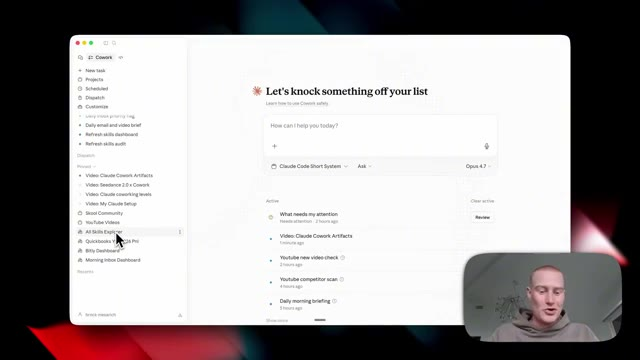
🔍 Agrandir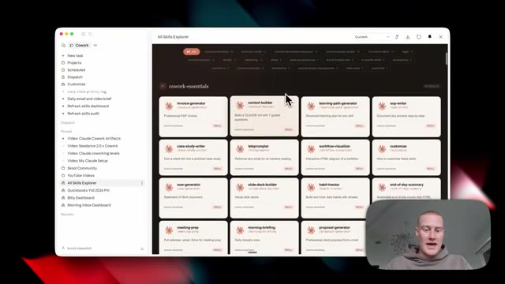
🔍 Agrandirdifférentes compétences et met cela à jour quotidiennement. Ensuite, vous pouvez voir que j'ai mon tableau de bord bit.ly ici que je vous ai déjà montré plus tôt dans cette vidéo et ensuite j'ai mon tableau de bord de boîte de réception du matin également et si je clique dessus, cela prendra juste quelques secondes et il se remplira automatiquement avec toutes ces informations ici. Donc vous vous demandez probablement comment je crée ces artefacts en direct, alors voici comment vous le faites dès maintenant. Vous allez simplement venir sur nouvelle tâche. Et par exemple, je vais juste dire, hé, crée-moi un tableau de bord qui catégorise automatiquement tous mes différents emails avec ceux auxquels je dois répondre. Et ensuite, décompose également toutes les différentes réunions que j'ai dans Google Calendar. En plus de cela, pouvez-vous également ajouter différentes informations de suivi bit.ly pour que je puisse
Interface & Outils : Interface de type application de productivité / tableau de bord personnel (« Claude Cowork »).
Contenu textuel & Code : Tableaux de bord de productivité, statistiques de la semaine, calendrier hebdomadaire et liste de tâches en cours (« What needs my attention », « Video: Claude Cowork Artifacts », etc.).
Action / Démonstration : Navigation et présentation des différents tableaux de bord et outils de gestion quotidienne par le présentateur.
voir quels liens de vidéo obtiennent la majorité des clics. Je veux que ce soit mon système d'exploitation quotidien. Je ne veux donc plus jamais avoir à parcourir manuellement ces différentes applications. Je pourrais simplement regarder ce tableau de bord et faire en sorte qu'il devienne mon principal système d'exploitation quotidien. Je lui donne donc ce déversement de cerveau sur le moment. J'utilise simplement Whisperflow pour parler à mon ordinateur et déverser automatiquement tout cela dans Claude. Et à partir de là, ce qu'il va faire, c'est quelques choses différentes.
Interface & Outils : Application Cowork sur macOS, interface de tableau de bord de productivité propulsée par IA.
Contenu textuel & Code : Texte du prompt utilisateur : "Hey, create me a dashboard that: automatically categorizes all of my different emails... breaks down all the different meetings... adds different Bitly tracking information so I could see which video links are getting the majority of clicks..."
Action / Démonstration : Saisie et envoi d'un prompt complexe à l'assistant IA pour automatiser la création d'un système d'exploitation quotidien unifié.
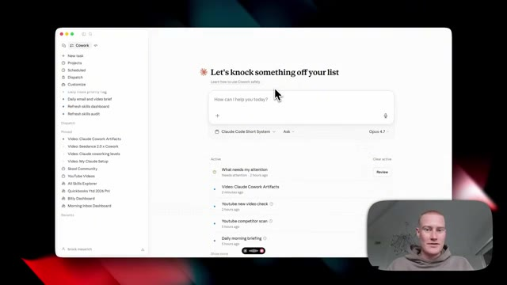
🔍 Agrandir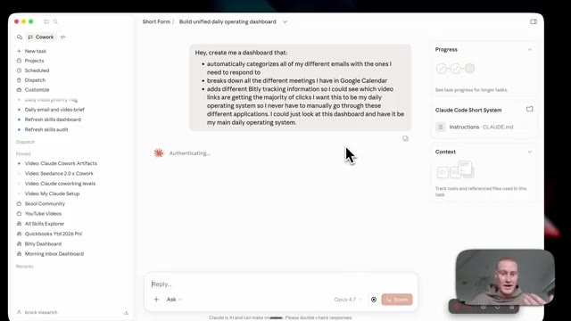
🔍 AgrandirÇa va extraire de mon Gmail en utilisant des connecteurs, que je vais vous montrer comment connecter tout de suite. Ça va extraire de mon Google Agenda et ça va automatiquement extraire de Bitly afin de voir toutes ces informations différentes. Avant cela, je devais aller sur le site Web de Bitly et récupérer tous ces liens différents, faire défiler tous ces liens, voir quel est le niveau d'engagement. Je devais cliquer dessus individuellement pour voir ces différentes données. Donc maintenant, avec cette nouvelle fonction des artéfacts en direct, cela va automatiquement alimenter mon tableau de bord du système d'exploitation quotidien que je n'ai pas besoin d'actualiser sans cesse et de gaspiller des jetons. Très bien.
Interface & Outils : Navigateur web affichant l'application Bitly (app.bitly.com) et interface de l'outil de productivité IA.
Contenu textuel & Code : Liens Bitly suivis (ex: "Claude Code 2.0 + Opus 4.7"), métriques d'engagement (347 engagements), codes QR associés.
Action / Démonstration : Navigation dans l'interface de Bitly pour consulter les performances et statistiques des différents liens de suivi.
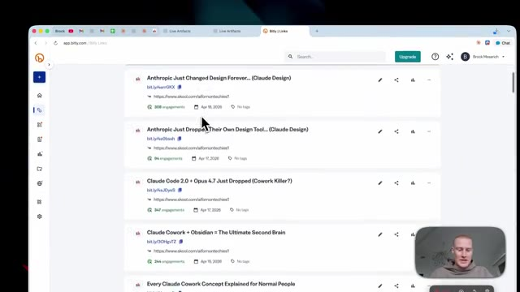
🔍 Agrandir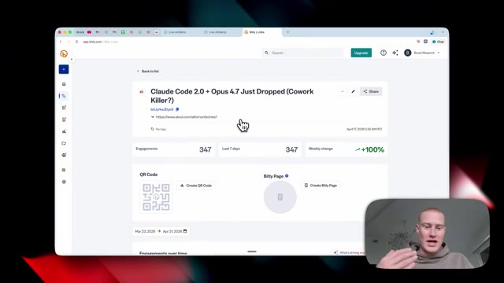
🔍 AgrandirEt comme par magie, deux minutes plus tard, nous avons maintenant notre centre de commandement quotidien qui est généré. Et je tiens à mentionner que c'est dans le style que j'ai demandé à Claude d'utiliser toujours pour générer ces tableaux de bord. Vous pouvez voir que c'est dans le thème de style d'Anthropic. C'est parce que je l'ai configuré personnellement ainsi. J'aime tout simplement beaucoup ce design, mais vous pouvez en faire le design que vous voulez. Nous avons maintenant notre tri de boîte de réception qui montre tous nos e-mails importants juste ici. Vous pouvez voir ceux qui sont urgents par rapport à ceux qui peuvent attendre. C'est plutôt cool. Nous avons tout sur notre calendrier parce qu'il extrait les données de notre Google Agenda et il montre même la performance de nos liens via Bitly. Ainsi, je peux voir quelles vidéos sont
Interface & Outils : Interface de l'application Claude Cowork / Claude Artifacts avec un affichage en écran partagé.
Contenu textuel & Code : Tableau de bord 'Daily Operating System' affichant des métriques d'e-mails, de calendrier et de liens (Bitly), ainsi qu'une interface de chat interactive.
Action / Démonstration : Navigation et présentation du centre de commandement quotidien généré automatiquement par l'IA.
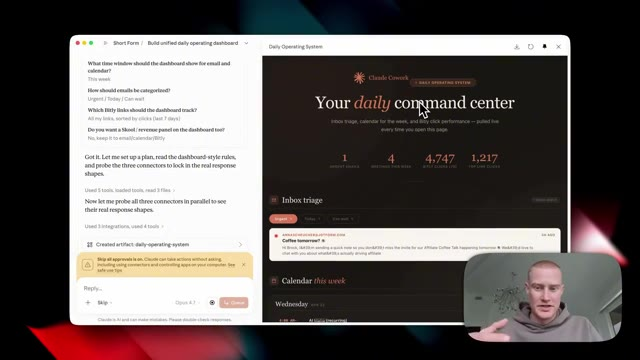
🔍 Agrandir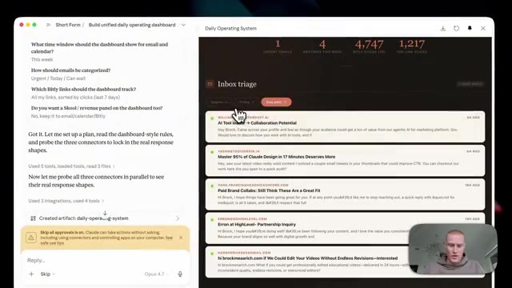
🔍 Agrandirqui génère le plus de trafic vers ma communauté scolaire. Je pourrais donc recréer des vidéos similaires. C'est maintenant mon système d'exploitation quotidien que j'ai généré en environ deux minutes et qui se met à jour automatiquement sans que j'aie besoin de l'actualiser. Tout cela est formidable, pouvoir générer des artefacts en direct, mais il n'y a honnêtement aucun intérêt à pouvoir faire cela à moins de puiser dans nos véritables informations provenant de toutes nos applications. Voici donc exactement comment nous configurons cela en quelques étapes simples. Nous allons donc nous rendre sur la barre latérale de gauche et cliquer sur personnaliser.
Interface & Outils : Interface web de Claude Cowork / application de tableau de bord personnel.
Contenu textuel & Code : Tableau de bord opérationnel personnalisé affichant des métriques d'e-mails, de calendrier et de performances de liens Bitly, ainsi qu'une barre latérale listant des scripts de suivi automatisés.
Action / Démonstration : Présentation du système d'exploitation quotidien automatisé généré par l'IA et de son interface de pilotage.
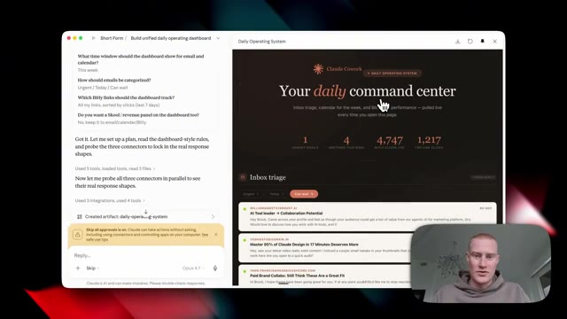
🔍 Agrandir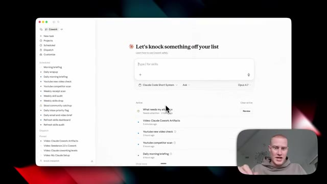
🔍 AgrandirSi nous ne voyons pas cette barre latérale, assurez-vous d'ouvrir cette petite icône juste ici, et ensuite nous verrons « personnaliser » juste sous « dispatch ». Et puis à partir d'ici, nous cliquons sur « connecteurs », qui se trouve en dessous des compétences. Et ici, nous pouvons ajouter nos différentes applications. Vous pouvez voir que j'en ai configuré quelques-unes différentes ici. Nous viendrions simplement ici, en cliquant sur « parcourir les connecteurs », et nous pourrions aller de l'avant et ajouter tous ces différents éléments. Laissez-moi simplement ajouter Google Drive, par exemple. Tout ce que j'ai à faire est de cliquer sur « continuer » pour accorder l'accès ici. Et puis juste comme ça, vous pouvez maintenant voir que Google Drive est connecté.
Interface & Outils : Interface de configuration/personnalisation de l'outil d'IA et navigateur web.
Contenu textuel & Code : Liste des applications connectables et options de configuration des permissions d'outils.
Action / Démonstration : Navigation dans les menus de personnalisation et sélection des connecteurs.
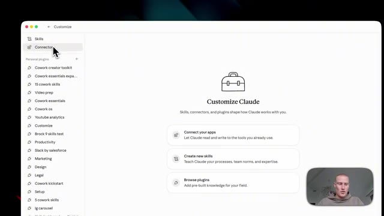
🔍 Agrandir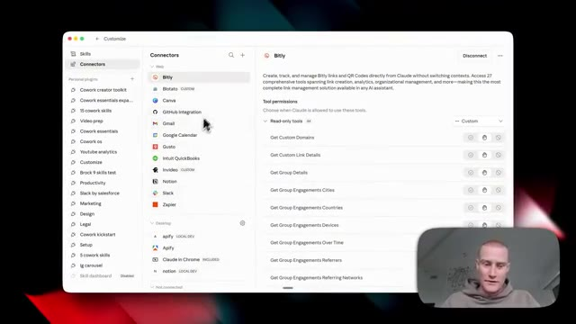
🔍 Agrandirdonc je pourrais commencer à extraire des informations de là. Et ensuite, je pourrais même faire en sorte que Cowork importe des choses pour moi sur Google Drive en pilote automatique. Maintenant, disons que vous parcourez toute cette liste sur Claude et qu'il y a ici une application à laquelle vous voulez vous connecter qui n'est pas incluse ici et qui ne se connecte pas de manière native. Si vous voulez faire cela, vous pourriez utiliser quelque chose appelé un serveur MCP. Laissez-moi donc vous montrer comment configurer cela maintenant.
Interface & Outils : Application de gestion de connecteurs et d'intégrations (style tableau de bord de configuration d'IA).
Contenu textuel & Code : Liste des connecteurs web et bureau (Google Drive, Notion, Slack, Zoom, Canva, Microsoft 365, etc.) avec leurs permissions de lecture et d'écriture.
Action / Démonstration : Navigation et présentation des différents connecteurs et outils d'intégration disponibles pour automatiser les tâches avec l'IA.
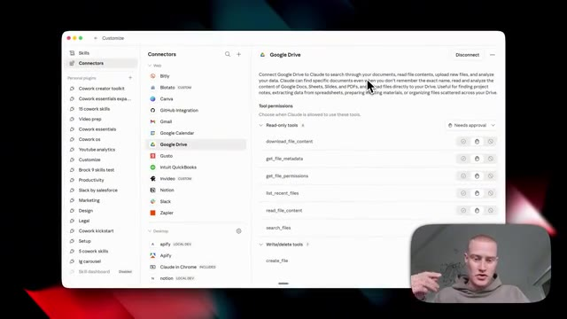
🔍 Agrandir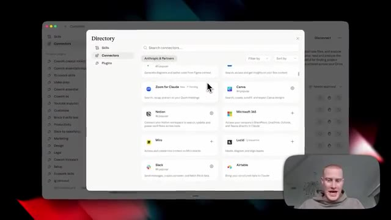
🔍 AgrandirPersonnellement, j'utilise un outil appelé Zapier MCP. Il vous permet de vous connecter à plus de 9 000 applications différentes. Et un point essentiel que je tiens à mentionner ici, c'est que vous n'êtes pas obligé de l'utiliser. Utilisez-le simplement s'il y a une application spécifique que vous voulez utiliser et que vous ne pouvez pas connecter directement à l'intérieur de Claude. Une fois que nous sommes dans Zapier MCP, nous allons simplement cliquer sur ajouter un nouveau serveur MCP. Et les gars, ça prend environ 30 secondes. Laissez-moi donc vous expliquer cela simplement. Vous allez venir sur Cowork comme notre client. Et juste ici, j'ai déjà quelques applications différentes configurées. Donc si vous voulez connecter différentes applications, vous cliquez simplement sur ajouter des outils, vous recherchez l'un des outils que vous voulez ajouter, vous les configurez ici. Et ensuite, une fois que vous voulez connecter cela à votre Claude, vous cliquez simplement
Interface & Outils : Navigateur Web affichant l'application Zapier MCP et l'interface de configuration des serveurs MCP.
Contenu textuel & Code : Liste des clients MCP compatibles (Claude, ChatGPT, Cursor, Gemini CLI, etc.) et intégrations d'applications tierces (Stripe, HubSpot, Google Drive).
Action / Démonstration : Navigation sur la page d'accueil de Zapier MCP, sélection d'un client dans la modale de configuration et affichage des outils connectés au serveur MCP.
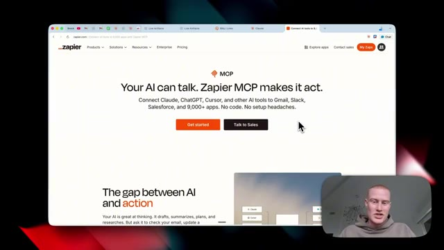
🔍 Agrandir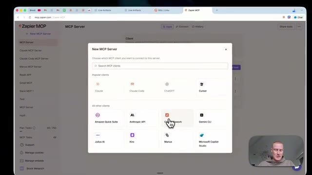
🔍 Agrandir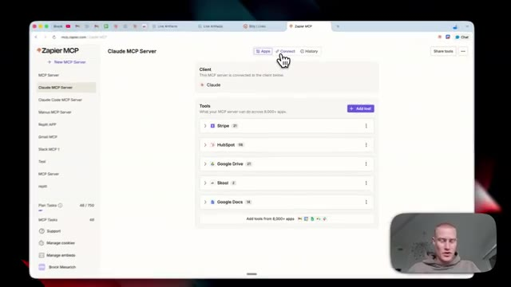
🔍 AgrandirOn clique sur connecter, puis sur ajouter à Claude. Ça va vous ramener directement ici sur Claude. Assurez-vous simplement de connecter Zapier. Et une fois que c'est connecté, vous devriez voir Zapier juste ici. Et nous pourrons commencer à utiliser n'importe lequel de ces outils que nous avons configurés à l'intérieur de ce serveur. Ensuite, pour voir tous les artefacts en direct que vous avez créés sur la barre latérale de gauche, vous devriez les voir juste ici.
Interface & Outils : Interface web de Claude / Cowork et panneau de configuration des connecteurs.
Contenu textuel & Code : Intégrations d'applications (Zapier, Google Docs, Google Drive, HubSpot) et paramètres de permissions de l'assistant IA. [Candidat sélectionné] Navigation dans l'interface de configuration des connecteurs tiers et retour à l'espace de travail principal.
Action / Démonstration : Explications face caméra et analyse conceptuelle des marchés.
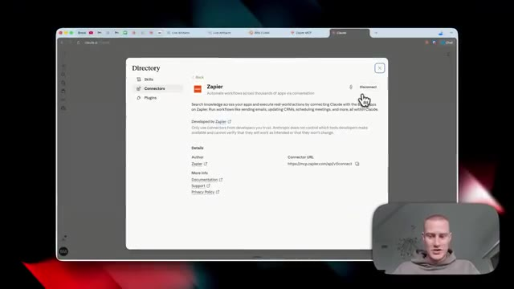
🔍 Agrandir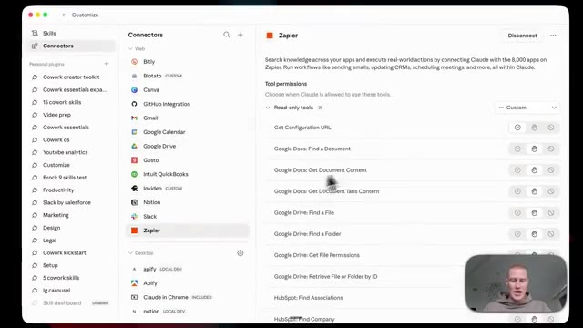
🔍 AgrandirVous pouvez voir évidemment mon système d'exploitation quotidien que je vous ai montré. Et puis aussi, il y a un bouton ici en haut où vous pouvez cliquer sur "artefacts en direct". Et cela montre tous les différents artefacts que vous avez créés, ainsi que vous pouvez cliquer sur "nouvel artefact" et en créer un à partir d'ici. Et cela ajoute même ces différents invites ici pour vous donner des idées d'artefacts en direct spécifiques que vous pouvez créer.
Interface & Outils : Interface web de Claude Cowork (système d'exploitation quotidien).
Contenu textuel & Code : Tableaux de bord, listes d'artefacts en direct, métriques de productivité et de marketing (e-mails, réunions, clics).
Action / Démonstration : Navigation dans l'interface de Claude Cowork pour présenter le centre de commande et les artefacts dynamiques.
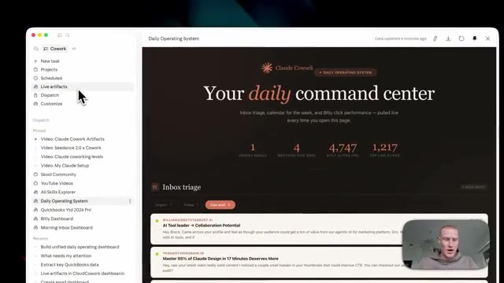
🔍 Agrandir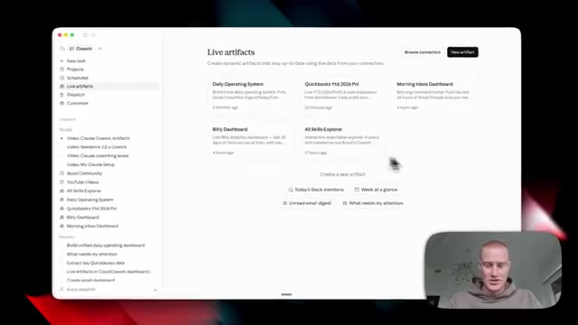
🔍 AgrandirDonc par exemple, celui-ci juste ici indique ce qui nécessite mon attention. Vous cliquez dessus, cela va alors générer cet artefact dynamique et ils résident tous fondamentalement sur la barre latérale de gauche à laquelle vous pouvez accéder à tout moment. Si vous voulez approfondir encore plus Claude et Claude Cowork et spécifiquement les artefacts dynamiques, vous pouvez rejoindre ma communauté School. Il y a un lien dans la description pour le faire, je vais publier un guide complet sur exactement comment utiliser et exploiter les artefacts, ainsi qu'à partager différents cas d'usage que je trouve pour cela dans ma communauté.
Interface & Outils : Application de type interface utilisateur IA (Claude Cowork) et plateforme communautaire Skool.
Contenu textuel & Code : Liste d'artefacts récents dans la barre latérale ("What needs my attention", "Build unified daily operating dashboard", etc.) et invite textuelle principale en cours de traitement.
Action / Démonstration : Navigation et démonstration de l'interface des artefacts dynamiques et de la barre latérale gauche.
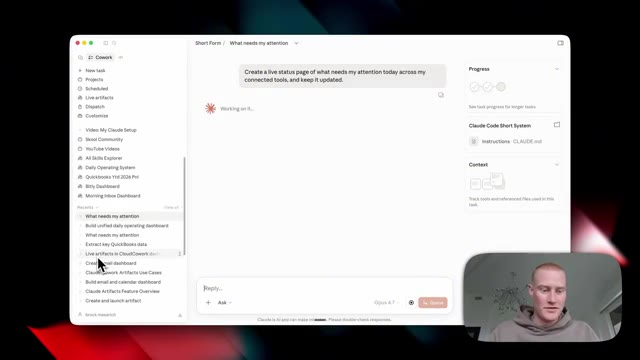
🔍 AgrandirCela étant dit, si vous voulez plus de contenu gratuit comme celui-ci, abonnez-vous à cette chaîne. Je couvre tous les sujets liés à l'IA pour les non-techniciens. Et cela étant dit, les gars, merci beaucoup d'être restés jusqu'à la fin et je vous vois dans la prochaine vidéo.
Interface & Outils : Navigateur web affichant la plateforme Skool et la chaîne YouTube de Brock Mesarich.
Contenu textuel & Code : Interface de communauté en ligne avec des publications de discussions ("Claude Cowork Live Artifacts Just Dropped") et liste de vidéos YouTube sur l'IA (Claude Cowork, automatisation).
Action / Démonstration : Navigation et présentation de la communauté Skool et de la chaîne YouTube pour encourager les spectateurs à s'abonner.